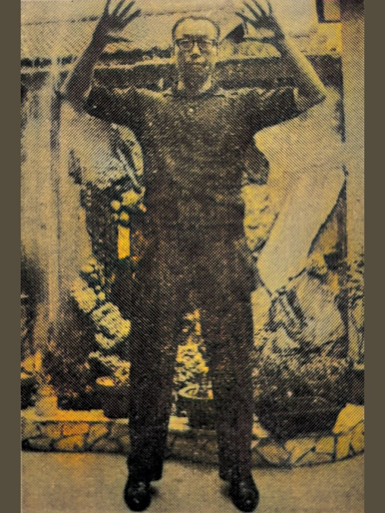

体系 · 根基
坐与站 · 一切之下的根基
照片
体系 · 根基
本站的每一门功夫都建立在它之上。内家体系之所以称为"内"，是因为练习者注意力中发生的事情，而不是动作看起来怎样，而静坐正是培养这种注意力的地方。
教两种形式。坐功练呼吸、姿势，以及心念的逐渐平静。站功，即长时间保持一个固定姿势，能做到坐功做不到的：在身体负重时练静，而这正是武术真正运作的状态。
站桩是大多数学员遇到真正困难的地方。什么也没发生。双腿发烫，脑子找出一切可能的理由想停下来，而唯一的指示就是继续站着。它练的不是耐力，而是在不适中保持当下、不作反应的能力，而这恰恰是搏击功夫最需要的能力。
这不是放松课程，也不与任何需要您皈依的宗教绑定。它是有结构的技术练习，目标明确：静到足以感觉气、引导气，并最终提升气。任何信仰或没有信仰的学员都可以练，毫无冲突。
每天坚持十分钟，比偶尔一小时走得更远。我们让人从短时间开始，只有在较短的练习真正稳定之后才延长。
教哪几种静坐？
两种：坐式，练习呼吸、姿势和让心念安定；站式，在身体承受负荷时练习静定。
练道家静坐需要信奉某种宗教吗？
不需要。它是一套有系统的技术练习，不要求你皈依任何宗教。任何信仰或无信仰的人都可以练，毫无冲突。
每天应该静坐多久？
每天持之以恒的十分钟，比偶尔一个小时更有进步。练习从短时间开始，只有短时间的练习真正稳定后才会延长。
在圣地亚哥县如何学习道家静坐？
课程为私人授课，仅限预约，由 Sifu Ajay Kumra 在加州桑蒂（圣地亚哥县）一对一或小班教学。不在圣地亚哥附近？他也会前往世界各地，在你所在的地方进行私人授课。第一堂课为免费体验课。